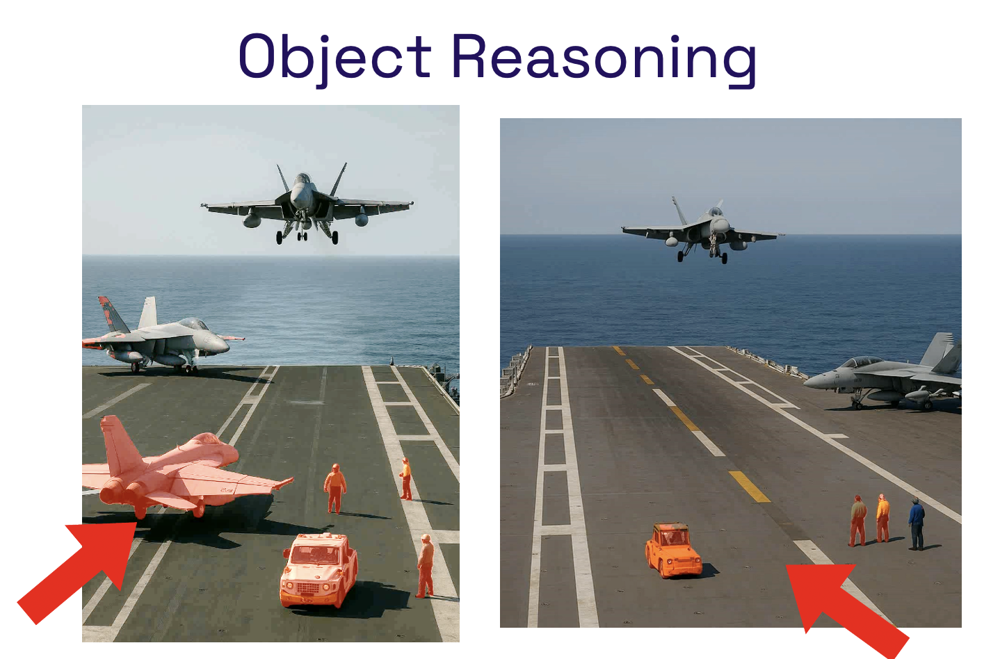

CS @ UC Irvine ’26 · Incoming M.S. CS @ Columbia · AI/ML · Neurosymbolic AI · Secure ML Inference · Computational Biology
About
🧠 I'm an undergraduate researcher in Computer Science at UC Irvine ('26) and an incoming M.S. student in Computer Science at Columbia University. I work on neuro-symbolic AI, brain‑inspired learning (HDC), multimodal models, and secure inference in neural networks (CKKS‑FHE). I'm very grateful for the opportunity to work with Prof. Mohsen Imani and Dr. Haleh Alimohamadi for my undergraduate research.
🎵 Favorite Artists: D'Angelo, Dijon, Mkgee (Corresponding fave albums below)
🎮 Favorite Game: Cyberpunk 2077
📖 Currently Reading: Designing Machine Learning Systems by Chip Huyen
With my cats Coconut (left)
& Kumquat (right) 🐱🐱 Click photo for more cat pics! 📸
News
May 22, 2026Integrating Symbolic and Neural Mechanisms for Adversarially Robust Hyperdimensional Computing — Accepted to ISLPED 2026.
Apr 5, 2026Live Spotify Stats — Feel free to stalk my recent listening history and see how our music tastes match up :)
Jan 19, 2026Optimal Hyperdimensional Representation for Learning and Cognitive Computation — Third author; accepted to Frontiers in Artificial Intelligence. [Paper]
Dec 15, 2025Started new position at BioIntelligence Lab with Dr. Haleh Alimohamadi: peptides research building classifiers on AMP vs non-AMP based on geometric features and QSAR (incorporating ESM Fold).
Nov 10, 2025Cross-Modal Event Encoder: Bridging Image–Text Knowledge to Event Streams — Accepted to WACV 2026.
Sept 23, 2025Geometric Priors for Generalizable World Models via Vector Symbolic Architecture — Accepted to NeurIPS 2025 Workshop NeurReps.
Research
Brain-Inspired Reasoning under Homomorphic Encryption
Privacy-preserving neurosymbolic framework executing inference entirely under CKKS-FHE while preserving HDC-based reasoning robustness. Maintains >90% accuracy on encrypted graph inference with 4× reduction in bootstrapping overhead through noise-adaptive scheduling. Lead author; rebuttal completed.
FHE · HDC · Neurosymbolic AI · Privacy-Preserving ML
Using Vector Symbolic Architecture (VSA) to build generalizable world models with learned group structure. Achieved 87.5% zero-shot accuracy and 4× noise robustness. Contributed to ablation studies with world model grid.
Cross-Modal Event Encoder: Bridging Image–Text Knowledge to Event Streams
Extending CLIP's zero-shot capabilities to event-based vision, bridging asynchronous event data with image-text representations. Achieved +19% zero-shot accuracy over prior methods with cross-modal retrieval across five modalities. Contributed attention visualization pipeline.
First universal HDC encoding framework that adapts dynamically between learning and cognitive reasoning. Achieves 95% learning accuracy with correlated encodings and 100% decoding accuracy under exclusive encodings. Quantifies correlation-separation trade-off for brain-like reasoning.
HyperEncrypt: Homomorphic Hyperdimensional Computing for Efficient and Secure Learning
We study Hyperdimensional Computing (HDC) as an alternative to encrypted deep learning: instead of long DNN compute chains that force frequent bootstrapping, HDC uses shallow, noise-resilient algebra that better matches FHE constraints. Using FHRR and GHRR, we connect hypervector similarity to shift-invariant kernels via Bochner's theorem, then quantify how CKKS noise degrades similarity structure, capacity, classification accuracy, and input decodability.
HDC · Kernel Methods · Privacy-Preserving ML · CKKS
A hybrid neuro-symbolic pipeline that fuses Vision Transformer features with classical texture-, shape-, and color descriptors (LBP, HOG, PHOG) through Hyperdimensional Computing. Across CIFAR10, COIL100, and ETH80 under FGSM and Genetic Attack, ViT + Classical HDC degrades more gracefully than pure HDC and ViT + HDC baselines — higher normalized AURC, tighter decision margins, and larger gains from partial adversarial retraining (+6.6–10.9 pp under FGSM, +17.1–26.3 pp under Genetic Attack).
HDC · Neurosymbolic AI · Adversarial Robustness · ViT
AdamsFoods Wholesale — Full-stack JavaScript app with React client and Node.js/Express server. Features product catalog, checkout system, AWS S3 integration, and JWT authentication.
code · live website ·
AdamsFoods Inventory Management System — React frontend for back-office stock tracking with item CRUD, search/filter, and low-stock alerts.
code ·
Feeding Pets of the Homeless Dashboard — Full-stack donation management platform for CTC @ UCI partnering with non-profit. React/TypeScript frontend with Node.js/Express backend, PostgreSQL database, Firebase Auth, and role-based access control.
frontend · backend ·
Safe UAV Landing for U.S. Navy — Custom pose estimation & reasoning model for safe UAV landing in adverse weather. Reduces casualty rates through intelligent deck clearance detection.
Crash Anticipation — VideoMAE model achieving 100% on AP, F1, and lead-time recall with real-time inference capability. Future: neurosymbolic reasoning for proactive collision avoidance.
code ·
Generalizable Arrhythmia Detection Under Patient-Wise Evaluation — Most MIT-BIH arrhythmia pipelines report ~98 to 99% accuracy using beat-wise splits, but these splits leak patient identity across train and test. This project benchmarks CNN and LSTM-autoencoder baselines under clean patient-wise evaluation, then introduces an optimal patient-wise split search that preserves patient separation while improving class coverage and generalization.
Manuscript in preparation (extended from CS184A) · repo ·
Structure-Aware Antimicrobial Peptide Prediction — ML pipeline combining traditional biochemical descriptors with structure-aware representations from ESMFold-predicted peptide conformations; compares SVM, MLP, and graph neural network approaches across QSAR, geometric, and residue-graph features, with extensions toward stapled peptide candidates and activity/hemolysis tradeoff analysis.
Ongoing research (BioIntelligence Lab @ UCI)
Safe UAV Landing — Demo

Crash Anticipation — Demo
Teaching & Service
Learning Assistant — ICS 33 (Spring 2025)
Web dev for non‑profits, pro bono (Feeding Pets of the Homeless)
Robust Reasoning and Learning with Brain-Inspired Representations under Homomorphic Encryption
Privacy-Preserving AI · Neuro-Symbolic Learning · Homomorphic Encryption · HDC
IEEE Transactions on Artificial Intelligence (2026, under review)
We propose a privacy-preserving neurosymbolic framework that executes inference entirely under CKKS Fully Homomorphic Encryption (FHE) while preserving the robustness and interpretability of Hyperdimensional Computing (HDC)-based reasoning. The framework introduces distributed bootstrapping to mitigate ciphertext-noise explosion across deep layers, balancing accuracy and compute cost.
Key Results
Maintains >90% accuracy on encrypted graph inference without plaintext access
4× reduction in bootstrapping overhead through noise-adaptive scheduling
Preserves symbolic structure of neural states under encrypted operations
Robust performance across multiple graph-based reasoning tasks
Why Homomorphic Encryption?
Cloud-based AI inference poses significant privacy risks when handling sensitive data (medical records, financial information, biometric data). Traditional encryption requires decryption before processing, exposing data to potential breaches. Fully Homomorphic Encryption enables computation directly on encrypted data, ensuring privacy even in untrusted cloud environments.
FHE's security advantage: Data remains encrypted throughout the entire inference pipeline in untrusted cloud environments
Framework Overview
Our end-to-end neurosymbolic pipeline integrates HDC-based symbolic reasoning with CKKS-FHE operations. The framework employs distributed bootstrapping at strategic network layers to prevent noise accumulation while minimizing computational overhead. Graph Neural Networks operate entirely on encrypted representations, with symbolic decoding preserving interpretability.
End-to-end neuro-symbolic FHE pipeline with distributed bootstrapping and symbolic decoding
Noise-Adaptive Bootstrapping
A critical challenge in FHE-based deep learning is ciphertext noise accumulation. Without proper noise management, encrypted operations cause accuracy to collapse as noise overwhelms the signal. Our distributed bootstrapping scheme strategically refreshes ciphertexts at high-noise layers, achieving a 4× reduction in bootstrapping overhead compared to naive per-layer approaches.
Empirical analysis: Noise growth without bootstrapping leads to accuracy collapse. Our approach balances accuracy preservation with computational efficiency
Technical Innovation
SEAL-Based Implementation: Built on Microsoft SEAL library for CKKS operations
Noise Characterization: Empirical analysis of real noise distributions in encrypted GNN operations
Distributed Bootstrapping: Adaptive scheduling reduces compute cost by 75% while maintaining accuracy
Symbolic Preservation: HDC-based representations maintain interpretability under encryption
Graph Reasoning: Encrypted inference on graph-structured data for video anomaly detection
Applications
The framework enables privacy-preserving AI for sensitive domains:
Healthcare: Encrypted medical diagnosis without exposing patient data
Finance: Fraud detection on encrypted transaction graphs
Surveillance: Privacy-preserving video anomaly detection in public spaces
IoT Security: Encrypted reasoning on edge device data
My contribution: Lead author and corresponding author. Designed and conducted SEAL-based experiments to characterize real noise distributions and evaluate CKKS performance under GNN operations. Implemented noise injection mechanisms and distributed bootstrapping schemes within the graph network to achieve robust encrypted reasoning. Led rebuttal process for IEEE TAI 2026.
Geometric Priors for Generalizable World Models via VSA
VSA · World Models · Generalization
NeurIPS 2025 Workshop on Symmetry and Geometry in Neural Representations
We introduce a world modeling framework grounded in Vector Symbolic Architecture (VSA) with learnable Fourier
Holographic Reduced Representation encoders and group‑structured latent transitions via element‑wise complex
multiplication, enabling composition directly in latent space.
Key Results
87.5% zero‑shot accuracy on unseen state‑action pairs
53.6% higher accuracy on 20‑timestep rollouts vs. MLP baseline
4× robustness to noise
Structured State Representations
Our VSA-based model (FHRR) learns structured, grid-like state embeddings that preserve geometric relationships, while traditional MLP models produce unstructured representations.
FHRR (VSA): Grid-like structured embeddings preserve spatial relationshipsMLP: Unstructured embeddings with no clear geometric pattern
Superior Generalization
VSA (FHRR) demonstrates significantly better generalization on held-out data across different data holdout ratios, maintaining high accuracy even when large portions of training data are withheld.
Rollout accuracy vs. data holdout ratio: VSA maintains strong performance while MLP degrades rapidly
Robustness to Noise
The VSA approach exhibits greater robustness to Gaussian noise compared to MLP baselines, maintaining near-perfect accuracy under significant noise perturbations.
1-step accuracy vs. Gaussian noise: VSA maintains >80% accuracy even with noise std of 5, while MLP drops to ~20%
My contribution: ablation studies with the world model grid. Post‑submission: MiniGrid experiments.
We extend CLIP's zero-shot and text-alignment capabilities to the event modality, developing a robust encoder that bridges asynchronous event data with image-text representations. The framework aligns event embeddings with CLIP's visual and textual spaces, preserving zero-shot generalization and enabling cross-modal applications across five modalities (Image, Event, Text, Sound, Depth).
Our visualization pipeline extracts attention heatmaps and relevance maps from the trained encoder, illustrating how CLIP's transferred attention captures salient event-specific regions. These visualizations demonstrate that the encoder successfully learns to focus on semantically meaningful areas in event data.
Attention heatmap: Peacock (ImageNet) - Model attends to distinctive features like tail feathers and body structure
Attention heatmap: Gramophone (N-Caltech) - Event encoder focuses on characteristic horn and base components
Attention heatmap: Fight scene (UCF-Crime) - Model captures action regions for video anomaly detection
Technical Approach
The framework employs contrastive learning to align event representations with CLIP's pre-trained visual and textual embeddings. By leveraging CLIP's powerful multi-modal alignment, the encoder inherits zero-shot capabilities while learning event-specific features through asynchronous temporal patterns.
Cross-Modal Applications
Zero-Shot Classification: Direct transfer of text-based class descriptions to event data
Cross-Modal Retrieval: Query across image, event, text, sound, and depth modalities
Video Anomaly Detection: Event-based detection without task-specific training
Multi-Modal Fusion: Combine complementary information from different sensor types
My contribution: Supported the visualization pipeline by extracting attention heatmaps and relevance maps from the trained encoder, demonstrating how the model attends to salient event-specific regions across different datasets.
Optimal Hyperdimensional Representation for Learning and Cognitive Computation
This work introduces the first universal HDC encoding framework that adapts dynamically between learning and cognitive reasoning tasks. By modulating the correlation of hypervectors through tunable kernel scales, the model optimizes both memorization capacity and decodability, bridging the gap between symbolic reasoning and pattern learning within a unified high-dimensional representation.
Key Results
Up to 95% learning accuracy with correlated encodings vs. 65% in uncorrelated baselines
100% decoding accuracy under exclusive encodings for cognitive tasks
Quantitative formulation of the correlation–separation trade-off that governs brain-like reasoning
Universal framework adaptable to both symbolic and pattern-based tasks
The Learning-Cognition Dichotomy
HDC systems face a fundamental trade-off: learning tasks benefit from correlated hypervector representations that enable generalization, while cognitive reasoning requires exclusive (orthogonal) encodings for symbolic manipulation. Traditional HDC methods optimize for one regime at the expense of the other. Our framework dynamically adapts encoding parameters to achieve optimal performance across both domains.
Learning Accuracy Analysis
We conducted comprehensive parameter sweeps to characterize how encoding dimensions (D) and kernel scales (w) affect learning performance. The heatmaps reveal distinct optimal regions: correlated encodings (smaller w values) dramatically improve learning accuracy, especially at lower dimensions where orthogonal encodings fail.
Learning accuracy (top) and separation (bottom) as functions of dimension D and kernel scale w. Correlated encodings (low w) achieve 95% accuracy, while maintaining measurable separation for downstream reasoning.
Decoding Accuracy Analysis
For cognitive tasks requiring symbolic manipulation, decoding accuracy depends on the exclusivity of hypervector encodings. Our analysis shows that higher kernel scales (larger w) produce more orthogonal representations, achieving 100% decoding accuracy. The 2D parameter space reveals the sweet spot where encodings are sufficiently exclusive for symbolic operations yet not overly sparse.
Decoding accuracy as functions of D and w (left) and wx vs wy (right). Exclusive encodings (high w) enable perfect symbolic decoding, demonstrating the cognitive reasoning capability of the framework.
Signal-to-Noise Ratio Characterization
To formalize the correlation-separation trade-off, we analyzed the signal-to-noise ratio (SNR) distributions for both same-class and different-class hypervector pairs across varying dimensionality. The histograms reveal clear separation patterns: at higher dimensions (p=100), same-class pairs maintain high correlation while different-class pairs remain decorrelated, enabling both generalization and discrimination.
SNR distributions for same-class (blue) and different-class (orange) hypervector pairs at p=10, 50, 100. Higher dimensionality provides better class separation while maintaining within-class correlation for generalization.
Technical Contribution
Universal Encoding Framework: Single parameterized system adaptable to learning and cognitive tasks
Theoretical Foundation: Mathematical formulation of the correlation-separation trade-off
Empirical Validation: Comprehensive parameter sweeps across dimensions and scales
Brain-Inspired Design: Mimics dual-process reasoning in biological neural systems
Applications
The adaptive HDC framework enables:
Hybrid AI Systems: Seamlessly combine symbolic reasoning with pattern learning
Edge Computing: Lightweight, efficient representations for resource-constrained devices
Cognitive Architectures: Brain-inspired models balancing memory and reasoning
Neuromorphic Hardware: Optimized encodings for analog compute substrates
My contribution: Conducted decoding analyses and developed learning-accuracy heatmaps to visualize how encoding parameters affect separability and generalization. Collected and analyzed the signal-to-noise ratio distributions that support the theoretical derivation of optimal kernel scales for learning and cognition.
HyperEncrypt: Homomorphic Hyperdimensional Computing for Efficient and Secure Learning
We study Hyperdimensional Computing (HDC) as an alternative to encrypted deep learning: instead of long DNN compute chains that force frequent bootstrapping, HDC uses shallow, noise-resilient algebra that better matches FHE constraints. Using FHRR and GHRR, we connect hypervector similarity to shift-invariant kernels via Bochner's theorem, then quantify how CKKS noise degrades similarity structure, capacity, classification accuracy, and input decodability.
Key Results
Bootstrapping reduction: Modest bootstrapping schedules + noise-robust encodings recover near-clean performance, achieving up to an order-of-magnitude fewer bootstrapping operations without sacrificing accuracy.
Theory-backed noise behavior: Under CKKS noise, similarity remains unbiased but its variance grows with encryption noise and shrinks with hypervector dimension (∝ σ²/D). This yields an explicit SNR expression that predicts when classification becomes unreliable.
Capacity under noise: CKKS noise collapses the separation between positive vs. negative cosine-similarity distributions; 25%–50% bootstrapping restores much of the margin, with GHRR recovering faster and more fully than FHRR.
Encrypted classification: On FMNIST, sparse schedules like 25% or 50% bootstrapping recover most of the lost accuracy (with diminishing returns beyond 50%); the plot reports an ~18% improvement from minimal bootstrapping.
Decodability trade-off: Increasing hypervector dimension and using moderate bootstrapping (e.g., 25%) restores much of the input reconstruction quality at far lower cost than full refresh; at higher D, 25% can get close to the clean baseline.
Why HDC for FHE?
FHE enables computation directly on encrypted data, but the practical blocker is ciphertext noise growth and the cost of bootstrapping refreshes. This paper argues HDC is a natural fit: its operations are simpler and its representations degrade more gracefully, so you can reach strong accuracy with far fewer refresh points than deep networks typically require.
Technical Idea
We treat hypervector similarity as a kernel estimator (for FHRR) and analyze how CKKS perturbations distort that similarity. The analysis shows exactly how noise scales with multiplicative depth and how increasing D and choosing sparse bootstrapping points can preserve margins. Empirically, GHRR + sparse bootstrapping consistently maintains higher capacity and better downstream accuracy than FHRR under the same noise budget.
My contribution: I analyzed how CKKS noise and bootstrapping distort the kernel behavior of HDC representations, and ran controlled comparisons between GHRR vs. FHRR under identical noise budgets. I produced the bootstrapping-by-noise heatmaps, the binding/bundling sensitivity plots, and cosine-similarity histograms that quantify margin collapse and recovery with refresh. I also implemented and evaluated reconstruction of binarized images from FHRR under CKKS noise to measure how encryption noise impacts decodability and information retention.
Integrating Symbolic and Neural Mechanisms for Adversarially Robust Hyperdimensional Computing
ISLPED 2026 (International Symposium on Low Power Electronics and Design)
Neuro-symbolic models may improve robustness by combining learned representations with structured composition, but their behavior under adversarial perturbation remains underexplored. We study a hybrid pipeline that fuses Vision Transformer (ViT) features with classical texture-, shape-, and color descriptors through Hyperdimensional Computing (HDC), treating each feature source as a symbol and composing them into class prototypes for similarity-based inference.
Key Results
Graceful degradation: Across CIFAR10 (Subset), COIL100, and ETH80 under FGSM and Genetic Attack, ViT + Classical HDC degrades more gracefully than pure HDC and ViT + HDC baselines.
Highest normalized AURC: The classical-neural fusion achieves the highest Area Under the Robustness Curve, indicating the slowest accuracy degradation across the evaluated perturbation sweep.
Stabler decision margins: Under attack, the fusion variants keep lower and tighter decision-margin distributions, reflecting less overconfident misclassification than ViT + HDC.
Stronger retraining recovery: Partial adversarial retraining yields larger gains for the fusion model — averaged across datasets, +6.6–10.9 percentage points under FGSM and +17.1–26.3 points under Genetic Attack.
Consistent clean ordering: Clean accuracy follows Pure HDC < ResNet + HDC < ViT + HDC < ViT + Classical HDC, and the fusion advantage widens under stronger perturbations.
Why Classical–Neural Fusion?
Adversarial perturbations most directly corrupt the globally optimized, pixel-level activations that learned encoders rely on. Classical descriptors such as Local Binary Pattern (texture), HOG, and PHOG (shape/edge) capture structural and relational cues that remain visually stable under FGSM and Genetic Attack. Fusing them with ViT's semantic abstraction inside a shared HDC space lets the final prototype-based decision draw on both structural stability and semantic richness, rather than depending on any single corruptible feature source.
Framework
The pipeline combines three components: a classical descriptor branch (texture, shape, color), a neural branch that provides learned semantic representations, and an HDC composition layer that maps each heterogeneous feature into a high-dimensional space and bundles them into class-specific prototypes. At inference, a test hypervector is assigned to the most similar prototype by cosine similarity. Four variants are compared under the same HDC-style decision rule — HDC Classifier (pure symbolic), ResNet18 + HDC, ViT + HDC, and the proposed ViT + Classical HDC — so observed gains are attributed to representational content rather than a different downstream classifier.
Threat Model
Robustness is evaluated under two complementary attacks: FGSM, a first-order white-box attack that perturbs inputs along the loss gradient, and Genetic Attack, a gradient-free gray-box attack that evolves adversarial examples through mutation and selection under partial observability. Gaussian noise is included only as a sanity-check baseline. Evaluation spans clean accuracy, degradation under increasing perturbation budgets, decision-margin behavior, hypervector-dimension sweeps, and partial adversarial retraining.
My contribution:
AdamsFoods Wholesale App
Full-Stack · React · Node.js · AWS S3 · JWT Auth
A comprehensive full-stack JavaScript application built with a React client and Node.js/Express server. The application serves as a wholesale platform with robust product management and user authentication.
Key Features
Product Catalog: Complete product browsing and management system
Shopping Cart & Checkout: Fully functional cart system with checkout workflow skeleton
AWS S3 Integration: Seamless media and document workflows using signed URL uploads with intelligent caching
JWT Authentication: Secure token-based authentication with role-based access control
Admin Routes: Protected admin endpoints with role guards for sensitive operations
REST API: Well-structured REST endpoints organized under /server
A React-based frontend application (Create React App) designed for back-office inventory tracking and stock management. Deployed on Vercel for reliable, fast access.
Developed for the student organization Commit the Change (CTC) at University of California, Irvine in partnership with the non-profit Feeding Pets of the Homeless, this end-to-end donation-management platform tracks, visualizes, and authenticates donation flows across multiple regional chapters.
Key Features
Unified Web Frontend: Built with React and TypeScript powering donation dashboards, forms, and admin workflows with modern UI/UX
Secure Backend API: Node.js/Express with SQL/PostgreSQL routing, user authentication, and data aggregation endpoints
Role-Based Access Control: Chapter coordinators, donors, and admins each access customized UIs and views tailored to their needs
Firebase Authentication: Secure user authentication and authorization with Firebase Auth integration
PostgreSQL Database: Robust relational database design for donation tracking, user management, and chapter coordination
Multi-Chapter Support: Scales across multiple regional chapters with isolated data views and aggregated reporting
Development Practices
The project followed professional software engineering practices aligned with CTC's workflow:
Git-Based Version Control: Branch management, merge-conflict resolution, and code reviews
Agile Development: Iterative sprints with regular stakeholder feedback and requirement refinement
CI/CD Alignment: Continuous integration and deployment practices ensuring code quality
Team Collaboration: Coordinated with multiple developers, designers, and project managers
Code Quality: Pull request reviews, testing standards, and documentation maintenance
Technical Architecture
Frontend: React with TypeScript, modern component architecture, state management, and responsive design
Backend: RESTful API built with Express.js, middleware for authentication and validation
Database: PostgreSQL with normalized schema design, efficient queries, and data integrity constraints
Authentication: Firebase Auth providing secure token-based authentication and role management
Deployment: Professional hosting setup with separate staging and production environments
Stakeholder Collaboration
Working directly with Feeding Pets of the Homeless coordinators required:
Requirements Gathering: Understanding non-profit workflows and pain points in manual donation tracking
UX Alignment: Iterative design feedback to ensure accessibility for non-technical users
Reduced administrative overhead through digital workflow automation
My contribution: Served as Full-Stack Developer (November 2023 – June 2024). Bridged design ↔ implementation, delivered SQL routing and front-end features, and drove Git governance for branch quality and team collaboration. Coordinated with nonprofit stakeholders to ensure platform met both user and organizational goals.
Computer Vision · Pose Estimation · Reasoning · CUI Dataset
Through BiasLab & Prof. Mohsen Imani, I collaborated with the U.S. Navy to develop a custom computer vision system combining pose estimation and symbolic reasoning for safe autonomous UAV landing operations.
Problem Statement
Traditional UAV landing systems rely on legacy fixed-pattern optical markers, which perform poorly in adverse weather conditions, leading to increased casualty rates and mission failures. The Navy needed a more robust solution that could operate safely in challenging environments.
Solution
Pose Estimation Model: Custom-trained model for accurate UAV positioning relative to landing deck
Reasoning Module: Intelligent system that delays landing when crew members or obstacles are detected on the landing spot/deck
Weather Robustness: Significantly improved performance in bad weather conditions compared to legacy systems
Real-time Processing: Fast inference for time-critical landing decisions
Impact
The system reduces casualty rates by preventing landings when the deck is not clear, providing a crucial safety layer for naval aviation operations. Worked on CUI (Controlled Unclassified Information) dataset under appropriate clearances.
Crash Anticipation
Computer Vision · VideoMAE · Autonomous Driving · Neurosymbolic AI
A cutting-edge video analysis system for predicting vehicle crashes before they occur, with future integration of neurosymbolic reasoning for actionable collision avoidance commands.
Current Performance (VideoMAE Baseline)
100% Accuracy: Perfect scores on AP (Average Precision), F1, and lead-time recall metrics
Real-time Inference: Capable of real-time processing with an NVIDIA 5070 Ti GPU
High Reliability: Demonstrated robust crash prediction across diverse scenarios
Current Limitations
The VideoMAE model's computational cost is too high for practical deployment on mobile devices or embedded systems in vehicles. This limits real-world applicability despite excellent performance.
Next Steps: Model Compression
Exploring smaller, more efficient models such as MobileNetV2.0 that can run on resource-constrained devices while maintaining similar performance levels. Goal: Enable deployment on standard automotive hardware.
Future Direction: Neurosymbolic Reasoning
Beyond simple crash prediction, the vision is to integrate a symbolic reasoning module that can:
Provide Direct Commands: Issue specific avoidance instructions (e.g., "turn left 15°", "brake immediately", "accelerate to avoid rear collision")
Infer Vehicle Dynamics: Calculate incoming vehicle speed, trajectory, and direction in real-time
Reason About Scenarios: Use symbolic reasoning to evaluate multiple avoidance strategies and select optimal actions
Proactive Collision Avoidance: Transform from reactive warning system to proactive safety system that prevents crashes through intelligent intervention
This neurosymbolic approach combines the perceptual power of deep learning with the interpretability and logical reasoning of symbolic AI, aligning with my broader research focus on neurosymbolic reasoning systems.
Generalizable Arrhythmia Detection Under Patient-Wise Evaluation
Healthcare ML · ECG · Robust Evaluation · Data Leakage · Deep Learning
Manuscript in preparation (extended from CS184A)
This work revisits a common benchmarking pitfall in ECG classification: evaluation protocol can dominate results. On the MIT-BIH Arrhythmia Database, beat-wise pooling can leak patient-specific patterns across splits, dramatically inflating accuracy and macro-F1. We evaluate two simple baselines under strict patient-wise separation and show that carefully curating patient splits to match class distributions improves clean generalization.
Takeaway: Leakage can create "SOTA-looking" numbers, while true inter-patient generalization is far harder, and rare-class coverage heavily affects macro-F1.
Macro-F1 is dramatically inflated by beat-wise pooling due to patient leakage. Strict patient-wise evaluation reveals the true generalization gap, and an optimal patient-wise split improves clean performance without changing architecture.
Why splitting matters
Beat-wise splits mix beats from the same patient across train and test, so models can exploit patient-specific morphology and noise characteristics rather than learning general arrhythmia features. Patient-wise evaluation better reflects deployment, where models must generalize to unseen patients.
Method: Optimal patient-wise split search
We search over patient assignments for train, validation, and test under strict patient separation and select splits that minimize the discrepancy between each split's label distribution and the overall dataset distribution. This improves rare-class coverage and produces a more stable evaluation than naive random patient-wise splitting.
Models evaluated
Simple 1D CNN baseline
LSTM autoencoder with a classification head (joint reconstruction + classification objective)
Note: A deeper residual CNN was implemented but excluded from the main narrative due to overfitting and weaker generalization.
Dataset and preprocessing
MIT-BIH Arrhythmia Database (48 half-hour recordings, 2 channels, 360 Hz). Beats are extracted as a 0.8-second window (288 samples) centered on the R-peak. Labels are mapped into 6 classes: Normal, Supraventricular, Ventricular, Fusion, Paced, Unknown.
Next steps (paper direction)
Expand to stronger patient-wise baselines and calibrate for class imbalance
Add confidence intervals over multiple patient-wise splits
Evaluate cross-dataset transfer or record-level generalization protocols
Package the split-search method as a reproducible benchmark utility
My contribution: I implemented the end-to-end pipeline and evaluation framework, including the patient-wise split logic and the script that searches for the optimal patient-wise split. I ran all ablations across splitting protocols, trained both baselines, and produced the evaluation summary used to highlight leakage and generalization gaps.